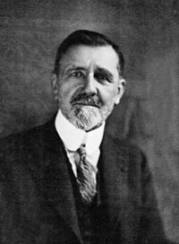
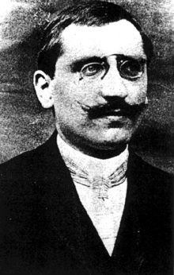
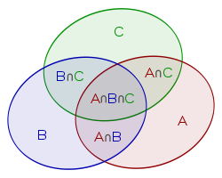

| Choisissez votre langue ! | Choose your language ! |
L'axiomatisation est un processus englobant destiné à poser un cadre théorique général couvrant la totalité des cas particuliers ayant servi d'exemples pour les débuts du développement de la théorie.
On a très vite trouvé un cadre satisfaisant pour couvrir le cas des univers fini. Ce cadre, très simple, ne fait intervenir l'analyse mathématique que pour les problèmes de limites, mais on reste dans le cas des limites de suites.
Pour couvrir le cas des univers infinis, dénombrables ou continus, dont nous avons déjà vus quelques exemples avec les probabilités géométriques, il fallait attendre que d'autres théories, en particulier la théorie de la mesure, soient elles-mêmes axiomatisées.
Le calcul des probabilités moderne repose en effet en grande partie sur le calcul intégral moderne et la , quels que soient ses mérites n'était pas adaptée.
Il a fallu attendre les travaux de Borel et de Lebesgue pour disposer du cadre théorique satisfaisant. Ce fut ensuite le travail de Kolmogorov que de formaliser la théorie et de lui donner des fondements sûrs.
Galerie des portaits
Axiomatization is an all-encompassing process intended to establish a general theoretical framework covering all the particular cases that served as examples for the beginnings of the development of the theory.
We quickly found a satisfactory framework to cover the case of finite spaces. This framework, very simple, involves mathematical analysis only for the problems of limits, but we stay in the case of the limits of sequences.
To cover the case of infinite, countable or continuous spaces, of which we have already seen some examples with geometric probabilities, it was necessary to wait for other theories, in particular measure theory, to be axiomatized themselves.
Modern probability calculus is indeed largely based on modern integral calculus and the , whatever its merits was not suitable.
We had to wait for the work of Borel and Lebesgue to have a satisfactory theoretical framework. It was then Kolmogorov's job to formalize the theory and give it a solid foundation.
Gallery of portraits
|
Emile Borel (1871/1956-FR) |
Henri-Léon Lebesgue (1875/1941-FR) |
Andrei Nikolaevitch Kolmogorov (1903/1987-URSS) |
|  |  |

|
Notion de tribu
Notion of σ-algebra
Une famille \( \mathfrak{F}\) de parties de E est appelée une 'tribu' (ou encore une 'σ-algèbre' ou plus rarement une 'algèbre de Borel' ) si elle vérifie les propriétés suivantes :
- E ∈ \( \mathfrak{F}\)
- Si A,B ∈ \( \mathfrak{F}\) alors A, B, A∩B, A∪B, appartiennent également à \( \mathfrak{F}\)
- Si A1,A2, ... , An, ... forment une suite infinie d'éléments de \( \mathfrak{F}\) alors \( \displaystyle \bigcup\limits_{i}A_{i} \) ∈ \( \mathfrak{F}\) et \( \displaystyle \bigcap\limits_{i}A_{i} \) ∈ \( \mathfrak{F}\)
A family \( \mathfrak{F}\) of subsets of E is called a 'σ-algebra ' (or more rarely a 'Borel algebra' ) if it satisfies the following properties:
- E ∈ \( \mathfrak{F}\)
- If A,B ∈ \( \mathfrak{F}\) then A, B, A∩ B, A∪B, also belong to \( \mathfrak{F}\)
- If A1,A2, ... , An, ... form an infinite sequence of elements of \ ( \mathfrak{F}\) then \( \displaystyle \bigcup\limits_{i}A_{i} \) ∈ \( \mathfrak{F}\) and \( \displaystyle \bigcap\limits_{i}A_{i} \) ∈ \( \mathfrak{F}\)
Nous avons déjà rencontré des familles de parties possédant des propriétés voisines, par exemple la famille des d'un , cependant la stabilité n'était dans ce cas assurée que pour les intersections finies.
Notons tout de suite que :
We have already encountered families of subsets with similar properties, for example the family of of a , however stability in this case was only guaranteed for finite intersections.
Note immediately that:
Tribu engendrée
Generated σ-algebra
Tribu des boréliens
σ-algebra of Borel-sets
La 'mesure' d'un tel pavé est le produit (a2,1-a1,1)×(a2,2-a2,1)× ... ×(an,2-an,1).
The 'measure' of such a cobblestone is the product (a2.1-a1.1 )×(a2.2-a2.1)× ... ×(an,2-an,1).
Espaces probabilisés
Probability space
- P est à valeurs positives ou nulles
- P(E)=1
- Si A1, ... ,An sont n éléments de la tribu deux à deux incompatibles (P(Ai∩Aj)=0 ∀ i,j i≠j ) alors
P(A1∪A2∪ ... ∪An)=P(A1)+P(A2)+ ... +P(An).
C'est le principe d'additivité finie. - Si (Ai)1≤i≤n est une famille dénombrable de la tribu, formée d'évènements deux à deux incompatibles, alors
\( \displaystyle P\left( {\bigcup\limits_{1 \leq i \leq n}A_{i}} \right) = {\sum\limits_{i = 1}^{n}P\left( A_{i} \right)} \)
(additivité 'complète')
- P is positive or null
- P(E)=1
- If A1, ... ,An are n elements of σ-algebra two by two incompatible (P(Ai∩Aj)=0 ∀i,j i≠j ) then
P(A1∪A2∪ ... ∪An)=P(A1)+P(A2)+ ... +P(An).
This is the principle of finite additivity. - If (Ai)1≤i≤n is a countable family of the σ-algebra, made up of pairwise incompatible events, then
\( \displaystyle P\left( {\bigcup\limits_{1 \leq i \leq n}A_{i}} \right) = {\sum\limits_{i = 1}^{n}P\left( A_{i } \right)} \)
('complete' additivity)
Bien entendu les axiomes 3 et 4 peuvent être regroupés en un seul avec la mention familles finies ou dénombrables (au plus dénombrables). Nous gardons cette formulation pour le lecteur intéressé seulement par les cas finis.
Il résulte immédiatemment de ces principes que :
Of course axioms 3 and 4 can be grouped into one with the mention finite or countable families (at most countable). We keep this formulation for the reader interested only in finite cases.
It follows immediately from these principles that:
- \( \displaystyle P\left ( \varnothing \right )=0 \)
- \( \displaystyle P\left( \overline{A} \right) = 1 - P(A) \)
- \( \displaystyle P\left ( \varnothing \right )=0 \)
- \( \displaystyle P\left( \overline{A} \right) = 1 - P(A) \)
En pratique Ω correspond à l'ensemble des résultats d'une épreuve aléatoire.
Quelques exemples
Univers finis
Dans le cas d'un ensemble fini quelconque Ω comportant n élements ω1, ω2, ... ,ωn, il est très facile de le transformer en un espace probabilisé.Il suffit pour cela de prendre pour tribu l'ensemble \( \mathfrak{P}\)(Ω) de toutes les parties de Ω.
Une probabilité sera associée à toute suite de n nombres réels positifs (p1, p2, ... ,pn) vérifiant
\( \displaystyle \sum\limits_{i = 1}^{n}p_{i} = 1 \)
La probabilité d'un évènement A sera définie comme\( \displaystyle P(A) = {\sum\limits_{i \mid \omega_{i} \in A}p_{i}} \)
Dans le cas particulier où pi=1/n ∀ i on retrouve le cas de l'équiprobabilité (probabilité uniforme).In practice Ω corresponds to the set of results of a random event.
Some examples
Finite spaces
In the case of any finite set Ω containing n elements ω1, ω2, ... ,ωn, it is very easy to transform it into a space probabilistic.It suffices to take as σ-algebra the set \( \mathfrak{P}\)(Ω) of all the subsets of Ω.
A probability will be associated with any sequence of n positive real numbers (p1, p2, ... ,pn) checking
\( \displaystyle \sum\limits_{i=1}^{n}p_{i}=1 \)
The probability of an event A will be defined as\( \displaystyle P(A) = {\sum\limits_{i \mid \omega_{i} \in A}p_{i}} \)
In the particular case where pi=1/n ∀ i we find the case of equiprobability (uniform probability).Univers dénombrables
Dans le cas où l'espace est infini dénombrable Ω={ω1, ω2, ... ,ωn, ....}, on procède comme précédemment mais en prenant une série à termes de somme égale à 1, au lieu d'une suite finie.Cette fois encore nous prenons pour tribu l'ensemble \( \mathfrak{P}\)(Ω) de toutes les parties de Ω.
Soit maintenant une série convergente de terme général positif pi et vérifiant :
\( \displaystyle \sum\limits_{i = 1}^{\infty}p_{i} = 1 \)
On pose cette fois encore :\( \displaystyle P(A) = {\sum\limits_{i \mid \omega_{i} \in A}p_{i}} \)
Sauf que cette fois le membre de droite n'est plus nécessairement une somme finie mais peut être une série extraite de la série de terme général pi.Le fait qu'on a bien une probabilité résulte des propriétés des séries convergentes à termes positifs (associativité de la somme, convergence commutative, etc.).
Voir par exemple , et encore .
Countable universes
In the case where the space is countably infinite Ω={ω1, ω2, ... ,ωn, ... .}, we proceed as before but taking the term of a series which is of sum equal to 1, instead of a finite sequence.This time again we take as tribe the set \( \mathfrak{P}\)(Ω) of all subsets of Ω.
Let now be a convergent series with positive general term pi and satisfying:
\( \displaystyle \sum\limits_{i=1}^{\infty}p_{i}=1 \)
Once again we ask:\( \displaystyle P(A) = {\sum\limits_{i \mid \omega_{i} \in A}p_{i}} \)
Except that this time the right-hand side is no longer necessarily a finite sum but can be a series extracted from the series of general term pi.The fact that we do have a probability results from the properties of convergent series with positive terms (associativity of the sum, commutative convergence, etc.).
See for example , and again .
Cas infini continu
Ce cas est le plus délicat. Nous ne considérerons que des ensembles qui sont soit des intervalles de longueur 1, soit des carrés de surface 1, soit des cubes de volume 1, etc...Nous admettrons que certains sous-ensembles, que l'on sait plus ou moins caractériser, sont qualifiés de 'mesurables'.
Appartiennent à cette catégorie entre, les points (singletons), les ensembles dénombrables, les intervalles ou plus généralement les pavés (intervalles, rectangles, parallélépipèdes), les réunions et les intersections dénombrables de tels ensembles.
Nous définissons la mesure d'un segment comme sa longueur, celle d'un rectangle comme sa surface, celle d'un parallélépipède comme son volume.
Nous admettrons que les figures géométriques simples du plan et de l'espace, polygones, polytopes, cercles, sphères, etc... appartiennent bien à la catégorie des ensembles mesurables et que leurs mesures sont celles données par les formules usuelles.
En fait nous traiterons des problèmes où les évènements correspondent à des figures géométriques simples, connues et dont on connait la mesure. Le fait qu'on puisse considérer des évènements plus complexes et dont la mesure est moins aisée sera complètement transparent, et aucune difficulté ne sera soulevée à ce niveau dans ce cours.
Pour des exemples voir ou revoir certains exercices de la page précédente:
- Problème de Buffon
- Paradoxe de Bertrand
- Problème 3D
- Problème de rencontre
Infinite continuous case
This case is the most delicate. We will only consider sets which are either intervals of length 1, or squares of area 1, or cubes of volume 1, etc...We will admit that certain subsets, which we can more or less characterize, are qualified as 'measurable'.
Belong to this category between, points (singletons), countable sets, intervals or more generally tiles (intervals, rectangles, parallelepipeds), countable unions and intersections of such sets.
We define the measurement of a segment as its length, that of a rectangle as its area, that of a parallelepiped as its volume.
We will admit that the simple geometric figures of the plane and of space, polygons, polytopes, circles, spheres, etc... belong to the category of measurable sets and that their measures are those given by the usual formulas.
In fact we will deal with problems where the events correspond to simple geometric figures, known and whose measure is known. The fact that we can consider more complex events whose measurement is less easy will be completely transparent, and no difficulty will be raised at this level in this course.
For examples see or review some exercises on the previous page:
- Buffon's problem
- Bertrand's paradox
- 3D problem
- Meeting problem
Nous admettrons en outre le résultat suivant qui appartient à la théorie de l'intégrale de Lebesgue :
We will also admit the following result which belongs to the theory of the Lebesgue integral:
P(Q)=mesure(Q)/mesure(Ω). La mesure étant à prendre au sens précédent.
P(Q)=measure(Q)/measure(Ω). The measurement is to be taken in the preceding sense.
La formule du Crible de Poincaré
Quand des évènements sont deux à deux mutuellemente exclusifs, la probabilité de leur disjonction est la somme de leurs probabilités (axiome d'additivité), mais qu'en est-il quand ils ne sont pas exclusifs ?Cas de deux évènements.
The inclusion-exclusion formula
When events are two by two mutually exclusive, the probability of their disjunction is the sum of their probabilities (axiom of additivity), but what about when they are not exclusive?Case of two events.
On a donc P(A∪B)=P(A-B)+P(B-A)+P(A∩B).
Mais P(A-B)+P(A∩B) =P(A) car A-B et A∩B sont incompatibles. De la même façon, P(B-A)+P(A∩B)=P(B), d'où notre formule.
Cas de trois évènements
But P(A-B)+P(A∩B) =P(A) because A-B and A∩B are incompatible. Similarly, P(B-A)+P(A∩B)=P(B), hence our formula.
Case of three events

em> Image wikipédiaP(A∪B∪C)
=P(A∪(B∪C))
=P(A)+P(B∪C)-P(A∩(B∪C))
=P(A)+P(B)+P(C)-P(B∩C)-P((A∩B)∪(A∩C))
=P(A)+P(B)+P(C)-P(P∩C)-(P(A∩B)+P(A∩C)-P(A∩B;∩C))
=P(A)+P(B)+P(C)-P(A∩B)-P(A∩C)-P(B∩C)+P(A∩B∩C) D'où notre résultat
P(A∪B∪C)
=P(A∪(B∪C))
=P(A)+P(B∪C)-P(A∩(B∪C))
=P(A)+P(B)+P(C)-P(B∩C)-P((A∩B)∪(A∩C))
=P(A)+P(B)+P(C)-P(P∩C)-(P(A∩B)+P(A∩C)-P(A∩B;∩C))< br> =P(A)+P(B)+P(C)-P(A∩B)-P(A∩C)-P(B∩C)+P(A∩B∩C) Hence our result
P(A∪B∪C)= P(A)+P(B)+P(C)-P(A∩B)-P(A∩C)-P(B∩C)+P(A∩B∩C)
P(A∪B∪C)= P(A)+P(B)+P(C)-P(A∩B)-P(A∩C)-P(B∩C)+P(A∩B&cap ;VS)
Cas général
Ces résultats se généralisent à une famille de n évènements par la formule dite du crible attribuée à Poincaré mais due à Abraham de Moivre.General case
These results generalize to a family of n events by the so-called inclusion-exclusion formula attributed in France to Poincaré but due to Abraham de Moivre.\( \displaystyle P\left( {\bigcup\limits_{1 \leq i \leq n}A_{i}} \right) =\sum_{i=1}^{n}P\left ( A_{i} \right ) +{\sum\limits_{k = 1}^{n}\left( {- 1} \right)^{k - 1}}{\sum\limits_{1 \leq i_{1} < i_{2} < ... < i_{k} \leq n}P\left( A_{i_{1}} \cap A_{i_{2}} \cap ... \cap A_{i_{k}} \right)} \)
\( \displaystyle P\left( {\bigcup\limits_{1 \leq i \leq n}A_{i}} \right) =\sum_{i=1}^{n}P\left ( A_{i} \right ) +{\sum\limits_{k = 1}^{n}\left( {- 1} \right)^{k - 1}}{\sum\limits_{1 \leq i_{1} < i_{2} < ... < i_{k} \leq n}P\left( A_{i_{1}} \cap A_{i_{2}} \cap ... \cap A_{i_{k}} \right)} \)
Ecrivons encore une formule analogue mois formelle, mais peut-être un peu plus lisible :
Let's write an analogous formula that is less formal, but perhaps a little more readable:
|
Création Gilles Dubois - licence CC-BY-SA
Created by Gilles Dubois - licence CC-BY-SA
|
Septembre 2023
September 2023
|
Version mobile Jquery
Mobile Jquery version
|
|